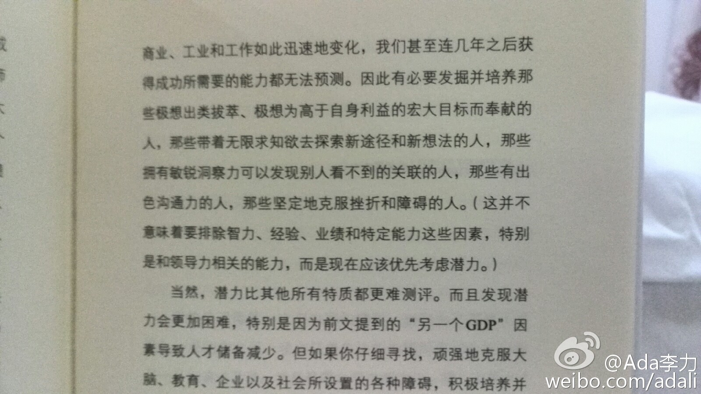

#读书#避免面试中因为“乐观倾向”而带来的过分自信，考察中要核实这么几点：1，求职者的渴望和谦虚。2，动机是职位而非薪酬。3，公司职位的优缺点都如实告知求职者，会提高接受工作的员工的未来满意度。4，请求职者最亲近的朋友帮TA评估这个职位。5，背景调查一定要做。
回复@River_蓝:《合伙人：如何发掘高潜力人才》41页//@River_蓝:有道理，哪本书？@Ada李力:#读书#越是脑力为主的行业，人的作用越大。传统行业里出来的人，难以理解高科技公司的招聘和管理逻辑，很大原因在于对员工作用的看法有巨大的差异。
#读书#人才的潜力除要考察动机外，还需要考察另外四个特质：求知欲，洞察力，沟通力，意志力。-- 问题是，我觉得很多公司连现成的工作绩效评估都没做好，怎么可能做好潜力的评估？不过，这个潜力标准是为寻访世界顶级公司的CEO而列，我用普通公司来套，当然会有大帽子的感觉。 
这么做，是让企业主随时处在逃税的风险中，因而时时有小辫子捏在zf手里，zf想收拾你就收拾你，暂时不动你，你也要知道得老老实实的。@马靖昊说会计:我认为企业做两套账的主要原因是逃税，而逃税实属企业的无奈之举。今天就有一位小企业主告诉我，如果老老实实按照真实的账表去交税，根本无法承受。我曾经做过一个小调查，企业税负可能占到现金利润的60%以上。政府应将税率降下来，让企业不为逃税而再做一套账，这样，按真账交税其实不影响税收收入。
搜集些#段子# ，例子举得很不错。李嘉诚问“开车进加油站最想完成什么？”众人答"加油！”李嘉诚略显失望，于是有人补充“休息、喝水、上厕所”。“开车进加油站的人，最想做的是——早一点离开，朝着目的地继续他的旅程。”李嘉诚说，"人做事当然有具体目的，但它们必须从属于一个远大目标"。